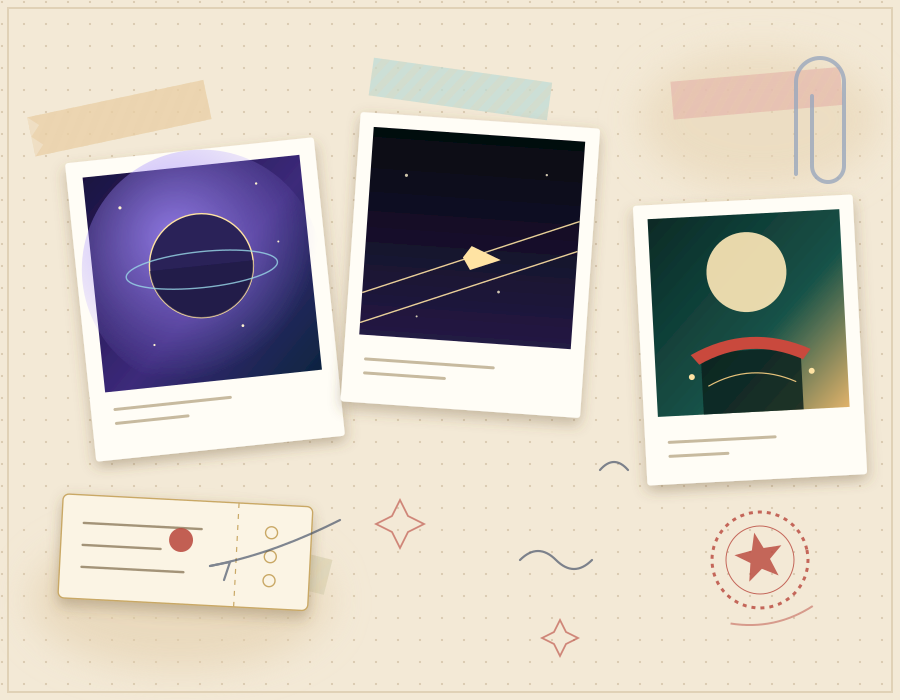

JOURNAL / 03
手账相册
九张星海切片，被我贴在一本虚构的手账里：胶带、拍立得白边、歪一点的角度，还有写歪的日期。点击任意一张可以放大，方向键翻页。



关于这些图：九张插画全部由本人用 SVG 手写完成——星轨是贝塞尔曲线，星尘是循环生成的小圆点，手账的胶带和车票是矩形与虚线。 没有下载任何图片素材，因此把它们放进 GitHub 仓库后，页面在任何设备上都能保持清晰。
JOURNAL / 03
九张星海切片，被我贴在一本虚构的手账里：胶带、拍立得白边、歪一点的角度，还有写歪的日期。点击任意一张可以放大，方向键翻页。

关于这些图：九张插画全部由本人用 SVG 手写完成——星轨是贝塞尔曲线，星尘是循环生成的小圆点，手账的胶带和车票是矩形与虚线。 没有下载任何图片素材，因此把它们放进 GitHub 仓库后，页面在任何设备上都能保持清晰。